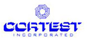
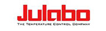

Наши партнёры
Мы поддерживаем тесный контакт с производителями оборудования в области новейших разработок, технологий, инструментария, поставки оригинальных запасных частей, обучения и переподготовки наших специалистов на базе заводов-изготовителей.
С Авторизационными письмами производителей Вы можете ознакомиться по ссылкам, указанным ниже.
Если Вы заинтересованы в закупках лабораторного оборудования, рекомендуем посетить сайты следующих компаний:
-
Agilent Technologies (США) — производитель аналитического оборудования в области газовой и жидкостной хроматографии, масс-спектрометрии, атомно-адсорбционных спектрометров, оптико-эмиссионных спектрометров и масс-спектрометров с индуктивно связанной плазмой, а так же УВИ- и УФ-спектрофотометров, систем для ИК-измерений.
Сервисные работы выполняют инженеры, прошедшие обучение на базе производителя. -
Anton Paar GmbH (Австрия) — производитель высокоточных плотномеров, реометров, вискозиметров, анализаторов алкогольных и безалкогольных напитков, модульных систем для микроволновой пробоподготовки и микроволнового синтеза, анализаторов дзета-потенциала твердых поверхностей, анализаторов наноструктур, мутномеров, рефрактометров, поляриметров и систем для контроля качества в сахарной индустрии.
Авторизационное письмо Anton Paar Вы можете посмотреть по ссылке. -
ATLAS (США) — производитель испытательных камер с ультрафиолетовым излучением.
Авторизационное письмо ATLAS Вы можете посмотреть по ссылке. -
BROOKFIELD ENGINEERING, INC. (США) — приизводитель вискозиметров и реометров, приборов для измерения вязкости, приборов для реологических испытаний различных материалов (Промышленный стандарт измерений).
Авторизационное письмо Brookfield Engineering Вы можете посмотреть по ссылке. -

CORTEST, INC. (США) — производитель оборудования для испытаний на коррозионную стойкость.
Авторизационное письмо Cortest Вы можете посмотреть по ссылке. -
Controls (Италия) — производитель оборудования для испытания цемента, бетона, строительных смесей, а также оборудования для дорожного строительства и геотехнического оборудования.
Авторизационное письмо Controls Вы можете посмотруть по ссылке -
Gecil Process (Франция) — производитель оборудования для разгонки сырой нефти и нефтепродуктов.
Авторизационное письмо Gecil Process Вы можете посмотреть по ссылке. -

Metrohm AG (Швейцария) — единственная компания, которая предлагает полный спектр оборудования для ионного анализа: титраторы, хроматографы, вольтамперметры и.т.д. для самого широкого применения.
Авторизационное письмо Metrohm AG Вы можете посмотреть по ссылке. -
Metrohm-Applikon (Нидерланды) — более 30 лет производит промышленные он-лайн анализаторы для контроля водных и неводных потоков в различных областях промышленности. Имеется множество отработанных решений для анализа высокочистых вод для тепловой и атомной энергетики, природных и сточных вод - для экологического контроля, технологических растворов - в металлургии, гальванике, химической промышленности, органических растворителей - на содержание следов воды, и другие.
Авторизационное письмо Metrohm-Applikon Вы можете посмотреть по ссылке. -
Mitsubishi Chemical (Япония) — производитель анализаторов микроколичеств серы, азота, хлора.
Авторизационное письмо Mitsubishi Chemical Вы можете посмотреть по ссылке. -
P.M. Tamson Instruments B.V. (Нидерланды) - является признанным производителем вискозиметрических бань, термостатов и криостатов различного назначения.
Авторизационное письмо P.M. Tamson Instruments B.V Вы можете посмотреть по ссылке. -
Normalab (Франция) — производитель оборудования контроля качества нефти и нефтепродуктов.
Авторизационное письмо Normalabe France Вы можете посмотреть по ссылке. -
Oxford Instruments (Англия) — производитель рентгенофлуоресцентных и ЯМР спектрометров.
Авторизационное письмо Oxford Instruments Вы можете посмотреть по ссылке. -
Weiss Umwelttechnik GmbH (Германия) — производитель классических испытательных камер и систем моделирования окружающей среды. Ассортимент продукции охватывает температурные и климатические испытательные камеры и системы моделирования воздействий погоды, термических ударов, коррозии, а так же испытательные камеры различных объёмов для продолжительных испытаний. Автомобильные/сборные камеры и интегрированные в производственную линию установки для моделирования воздействий факторов окружающей среды и камеры для биологических исследований.
Авторизационное письмо Weiss Umwelttechnik Вы можете посмотреть по ссылке. -

Julabo GmbH - производитель термостатирующего оборудования.
Авторизационное письмо Julabo GmbH вы можете посмотреть по ссылке.
Сотрудничество с нашим Сервисным центром – это ключ к решению ваших сервисных задач, залог уверенности и бесперебойности работы Ваших лабораторий.
Эффективное долгосрочное партнерство с производителем оборудования, с одной стороны, и конечным пользователем этого оборудования, с другой стороны, это тот фактор, который обеспечивает нашей сервисной системе стабильность и перспективу.